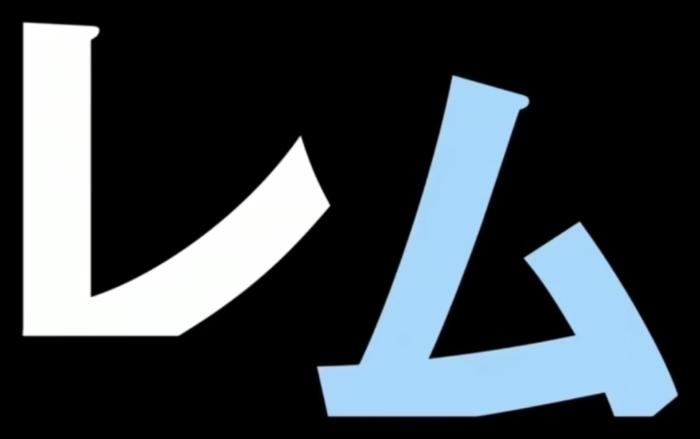
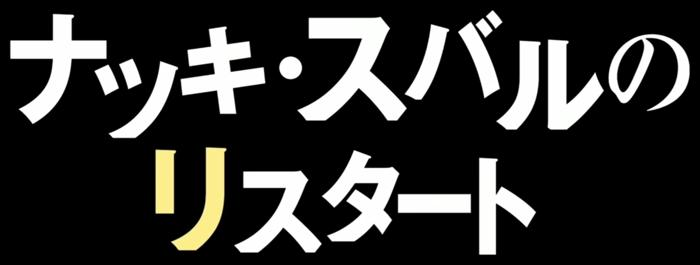

b01 · 鎖の音
short · reference_evaluation
Reference

A
引擎 301 ms；六张偏好：
20 个固定标题 × 两套语义方案 × 6 个候选。A 完全无大模型；B 使用会话模型生成并冻结的语义 JSON。B 未调用在线 API；未测 API 延迟、成本、独立审美评分。内部 Score 仅是约束诊断。所有候选均展示。
完整参数 JSONshort · reference_evaluation
偏好：
katakana_short · reference_evaluation

偏好：
mixed · reference_evaluation
偏好：
mixed · reference_evaluation
偏好：
all_kanji · reference_evaluation

偏好：
colored_particle · reference_evaluation

偏好：
katakana · reference_evaluation

偏好：
long_name · reference_evaluation
偏好：
punctuation_repeat · reference_evaluation

偏好：
contrast · reference_evaluation

偏好：
parallel · reference_evaluation
偏好：
long · reference_evaluation
偏好：
katakana_question · reference_evaluation
偏好：
unseen_requested · unseen_text
未见过的文本，无原始参考。
偏好：
unseen_medium · unseen_text
未见过的文本，无原始参考。
偏好：
unseen_quotes · unseen_text
未见过的文本，无原始参考。
偏好：
unseen_latin_number · unseen_text
未见过的文本，无原始参考。
偏好：
unseen_hiragana · unseen_text
未见过的文本，无原始参考。
偏好：
unseen_parallel · unseen_text
未见过的文本，无原始参考。
偏好：
unseen_kanji_katakana · unseen_text
未见过的文本，无原始参考。
偏好：
 interwoven · score 5.975
interwoven · score 5.975 compact_anchor · score 7.148
compact_anchor · score 7.148 wide_block · score 6.093
wide_block · score 6.093 wide_block · score 6.628
wide_block · score 6.628 alternating_steps · score 6.580
alternating_steps · score 6.580 wide_block · score 6.640
wide_block · score 6.640 wide_block · score 7.176
wide_block · score 7.176 interwoven · score 6.384
interwoven · score 6.384 wide_block · score 7.099
wide_block · score 7.099 alternating_steps · score 6.817
alternating_steps · score 6.817